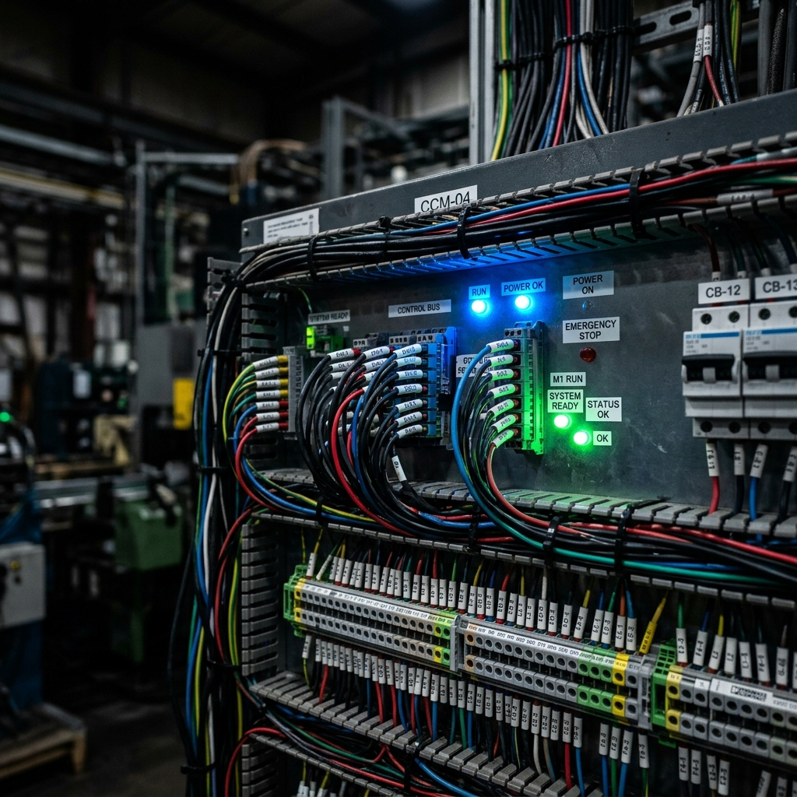
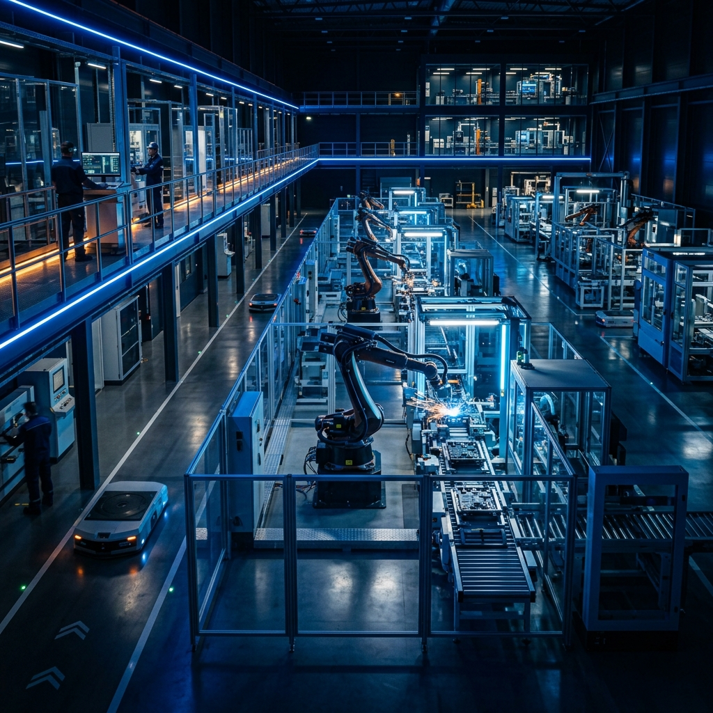
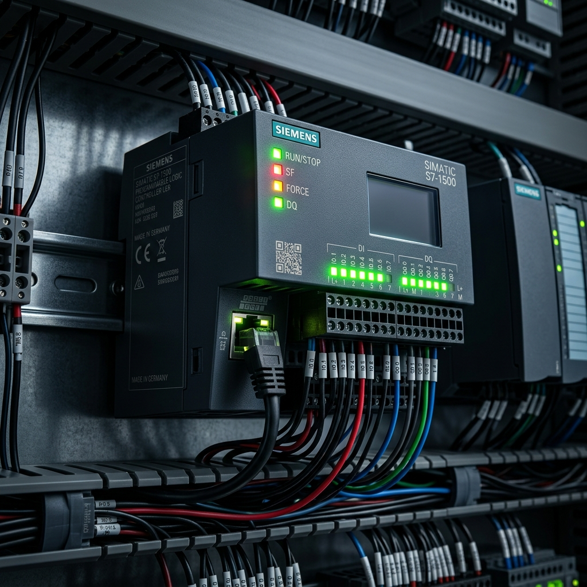

Especialidades TecManutenções
Soluções completas desenhadas para eliminar gargalos, reduzir paradas e garantir segurança jurídica com emissão de ART.
Adequação NR12 (Turnkey)
Esqueça as multas e o risco de interdição. Entregamos a máquina legalizada de ponta a ponta: Apreciação de Riscos, projeto elétrico/mecânico, instalação de relés e emissão de ART via engenheiros parceiros credenciados no CREA.
-
✔
Apreciação de Risco Inicial Documentação completa dos riscos mecânicos e elétricos da máquina.
-
✔
Engenharia de Execução Instalação de CLPs de segurança, chaves de intertravamento, cortinas de luz e adequação de painéis elétricos.
-
✔
Validação Final e ART Laudo conclusivo de conformidade NR12 assinado por Engenheiro com recolhimento de ART.

Automação e Retrofit
Transformamos máquinas obsoletas em equipamentos de alta produtividade. Modernização completa que se paga com o aumento de OEE. Possuímos grande know-how na montagem eletromecânica de Extrusoras de Plástico para granulados PEAD.
-
✔
Montagem de Painéis (CCM / QGBT) Quadros montados com componentes industriais de ponta e chicotes impecáveis.
-
✔
Programação de CLP e IHM Lógicas limpas e telas amigáveis para o operador entender e reduzir o tempo de setup.
-
✔
Redes Industriais e Inversores Parametrização de drives, soft starters e instrumentação para sincronismo perfeito.

Paradas de Manutenção
Sua equipe interna não dá conta da parada geral? Nós fornecemos o reforço técnico qualificado: profissionais de campo disciplinados que executam com precisão.
-
✔
Revisão e Limpeza de Painéis Limpeza técnica, reaperto com torquímetro e substituição de componentes oxidados.
-
✔
Revisão de Motores e Infraestrutura Medição de isolação (Megger), troca de rolamentos e manutenção em eletrocalhas.
-
✔
Startup Assistido Acompanhamento no retorno da fábrica para garantir partida 100% lisa.

Cabines Primárias e Subestações
A energia não pode oscilar nem falhar. Executamos projetos, comissionamento e manutenção preventiva anual rigorosa em cabines primárias e subestações industriais.
-
✔
Manutenção Preventiva (Parada Anual) Limpeza química, reaperto com torque específico e termografia em barramentos.
-
✔
Ensaios Elétricos e Laudos Resistência ôhmica, resistência de isolamento (Megger), testes em relés de proteção e análise de óleo do transformador.
-
✔
Adequação e Comissionamento Projetos de modernização e startup seguro de novas cabines primárias para ampliação de carga.

Precisa de orçamento técnico para a sua fábrica?
Fale diretamente com os especialistas da TecManutenções no WhatsApp para agendamento de visita técnica sem custo.
Falar no WhatsApp: (19) 98380-8498